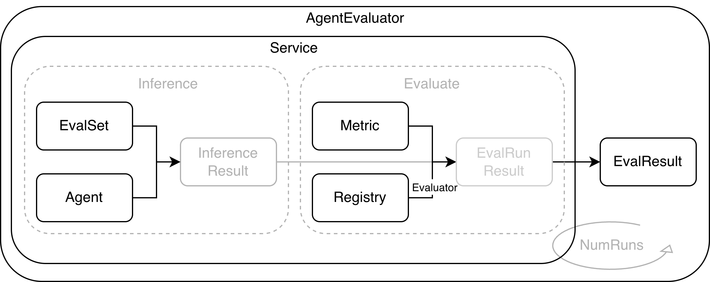

Evaluation 使用文档
随着大模型能力与工具生态逐步成熟，Agent 系统从试验性场景走向业务关键链路，版本迭代频率不断提高，但是交付质量不再取决于一次演示的正确输出，而取决于在模型、提示词、工具、知识库与编排持续演进下的稳定性与可回归性。版本迭代过程中，关键行为可能发生隐蔽漂移，例如工具选择、参数结构或输出形态的变化，稳定回归问题亟待解决。
与确定性系统不同，Agent 系统问题通常表现为概率性偏离，复现与回放困难，定位需要跨越日志、轨迹与外部依赖，导致问题闭环成本显著上升。
评估的核心目的在于将关键场景与验收标准资产化，沉淀为可持续的回归信号，而 tRPC-Agent-Go 提供开箱即用的评估能力，支持基于评估集与评估指标的资产管理与结果落盘，内置静态评估器与 LLM Judge 评估器，并提供多轮会话评估、多次重复运行、Trace 评估模式、回调点、上下文注入与并发推理等能力，以支撑本地调试与流水线回归的工程化接入。
如果你希望在评估基础上进一步自动优化提示词，可以继续阅读 PromptIter 使用文档 。PromptIter 建立在 Evaluation 之上，提供训练集与验证集分离、多轮优化、异步运行管理和 HTTP 接口等能力。
快速开始
本节给出一个最小使用示例，帮助读者快速感受 tRPC-Agent-Go 评估功能的使用方法。
本示例基于本地文件评估，完整代码见 examples/evaluation/local 。此外，框架还提供了基于内存的评估实现，完整示例参见 examples/evaluation/inmemory 。
环境准备
运行前配置模型服务的环境变量。
export OPENAI_API_KEY = "sk-xxx"
# 可选，不设置时默认使用 https://api.openai.com/v1
export OPENAI_BASE_URL = "https://api.deepseek.com/v1"
基于本地文件评估示例
本示例基于本地文件评估，完整代码见 examples/evaluation/local 。
代码示例
下面给出两段核心代码片段，分别用于构建 Agent 与执行评估。
Agent 代码片段
这段代码构建了一个最小可评估的 Agent，使用 llmagent 挂载名为 calculator 的函数工具，并通过 instruction 约束数学问题都走工具调用，便于在评估中稳定对齐工具轨迹。
import (
"trpc.group/trpc-go/trpc-agent-go/agent"
"trpc.group/trpc-go/trpc-agent-go/agent/llmagent"
"trpc.group/trpc-go/trpc-agent-go/model"
"trpc.group/trpc-go/trpc-agent-go/model/openai"
"trpc.group/trpc-go/trpc-agent-go/tool"
"trpc.group/trpc-go/trpc-agent-go/tool/function"
)
func newCalculatorAgent ( modelName string , stream bool ) agent . Agent {
calculatorTool := function . NewFunctionTool (
calculate ,
function . WithName ( "calculator" ),
function . WithDescription ( "Perform arithmetic operations including add, subtract, multiply, and divide." ),
)
genCfg := model . GenerationConfig {
MaxTokens : intPtr ( 512 ),
Temperature : floatPtr ( 1.0 ),
Stream : stream ,
}
return llmagent . New (
"calculator-agent" ,
llmagent . WithModel ( openai . New ( modelName )),
llmagent . WithTools ([] tool . Tool { calculatorTool }),
llmagent . WithInstruction ( "Use the calculator function tool for every math problem." ),
llmagent . WithDescription ( "Calculator agent demonstrating function calling for evaluation workflow." ),
llmagent . WithGenerationConfig ( genCfg ),
)
}
type calculatorArgs struct {
Operation string `json:"operation"`
A float64 `json:"a"`
B float64 `json:"b"`
}
type calculatorResult struct {
Operation string `json:"operation"`
A float64 `json:"a"`
B float64 `json:"b"`
Result float64 `json:"result"`
}
func calculate ( _ context . Context , args calculatorArgs ) ( calculatorResult , error ) {
var result float64
switch strings . ToLower ( args . Operation ) {
case "add" , "+" :
result = args . A + args . B
case "subtract" , "-" :
result = args . A - args . B
case "multiply" , "*" :
result = args . A * args . B
case "divide" , "/" :
if args . B == 0 {
return calculatorResult {}, fmt . Errorf ( "division by zero" )
}
result = args . A / args . B
default :
return calculatorResult {}, fmt . Errorf ( "unsupported operation %q" , args . Operation )
}
return calculatorResult {
Operation : args . Operation ,
A : args . A ,
B : args . B ,
Result : result ,
}, nil
}
评估代码片段
这段代码通过 Agent 创建可执行的 Runner，配置三个本地 Manager 读取评估集 EvalSet 与评估指标 Metric 并写入结果文件，再通过 evaluation.New 创建 AgentEvaluator 并调用 Evaluate 方法执行指定评估集。
import (
"trpc.group/trpc-go/trpc-agent-go/evaluation"
"trpc.group/trpc-go/trpc-agent-go/evaluation/evalresult"
evalresultlocal "trpc.group/trpc-go/trpc-agent-go/evaluation/evalresult/local"
"trpc.group/trpc-go/trpc-agent-go/evaluation/evalset"
evalsetlocal "trpc.group/trpc-go/trpc-agent-go/evaluation/evalset/local"
"trpc.group/trpc-go/trpc-agent-go/evaluation/evaluator/registry"
"trpc.group/trpc-go/trpc-agent-go/evaluation/metric"
metriclocal "trpc.group/trpc-go/trpc-agent-go/evaluation/metric/local"
"trpc.group/trpc-go/trpc-agent-go/runner"
)
const (
appName = "math-eval-app"
modelName = "deepseek-v4-flash"
streaming = true
evalSetID = "math-basic"
dataDir = "./data"
outputDir = "./output"
)
// 通过 Agent 创建 Runner
runner := runner . NewRunner ( appName , newCalculatorAgent ( modelName , streaming ))
defer runner . Close ()
// 创建评估各 manager 与评估注册中心
evalSetManager := evalsetlocal . New ( evalset . WithBaseDir ( dataDir ))
metricManager := metriclocal . New ( metric . WithBaseDir ( dataDir ))
evalResultManager := evalresultlocal . New ( evalresult . WithBaseDir ( outputDir ))
registry := registry . New ()
// 创建 AgentEvaluator
agentEvaluator , err := evaluation . New (
appName ,
runner ,
evaluation . WithEvalSetManager ( evalSetManager ),
evaluation . WithMetricManager ( metricManager ),
evaluation . WithEvalResultManager ( evalResultManager ),
evaluation . WithRegistry ( registry ),
)
if err != nil {
log . Fatalf ( "create evaluator: %v" , err )
}
defer agentEvaluator . Close ()
// 执行评估
result , err := agentEvaluator . Evaluate ( ctx , evalSetID )
if err != nil {
log . Fatalf ( "evaluate: %v" , err )
}
// 解析评估结果
fmt . Println ( "✅ Evaluation completed with local storage" )
fmt . Printf ( "App: %s\n" , result . AppName )
fmt . Printf ( "Eval Set: %s\n" , result . EvalSetID )
fmt . Printf ( "Overall Status: %s\n" , result . OverallStatus )
评估文件
评估文件包含评估集文件与评估指标文件，组织结构如下所示。
math-eval-app/
math-basic.evalset.json # 评估集文件
math-basic.metrics.json # 评估指标文件
评估集文件
评估集文件路径为 data/math-eval-app/math-basic.evalset.json，用于承载评估用例。推理阶段会按 evalCases 遍历用例，再按每个用例的 conversation 逐轮取 userContent 作为输入。
以下评估集文件示例定义了一个名为 math-basic 的评估集。评估执行时会用 evalSetId 选择要运行的评估集，用 evalCases 承载用例列表，本例只有一个用例 calc_add。推理阶段会按 sessionInput 创建会话，再按 conversation 的顺序逐轮推理。本例只有一轮 calc_add-1，输入来自 userContent，也就是让 Agent 处理 calc add 2 3。这份用例选择工具轨迹评估器，因此在 tools 中写入预期的工具轨迹。它表达了一个具体要求，Agent 需要调用名为 calculator 的工具，入参是加法与两个操作数，工具结果也需要匹配。工具 id 通常由运行时生成，不作为匹配依据。
{
"evalSetId" : "math-basic" ,
"name" : "math-basic" ,
"evalCases" : [
{
"evalId" : "calc_add" ,
"conversation" : [
{
"invocationId" : "calc_add-1" ,
"userContent" : {
"role" : "user" ,
"content" : "calc add 2 3"
},
"tools" : [
{
"id" : "tool_use_1" ,
"name" : "calculator" ,
"arguments" : {
"operation" : "add" ,
"a" : 2 ,
"b" : 3
},
"result" : {
"a" : 2 ,
"b" : 3 ,
"operation" : "add" ,
"result" : 5
}
}
]
}
],
"sessionInput" : {
"appName" : "math-eval-app" ,
"userId" : "user"
}
}
],
"creationTimestamp" : 1761134484.9804401
}
评估指标文件
评估指标文件路径为 data/math-eval-app/math-basic.metrics.json，用于描述评估指标，按照 metricName 选择评估器，通过 criterion 描述评估准则，根据 threshold 定义阈值。一个文件可以配置多条指标，框架会依次执行。
本节只配置工具轨迹评估器 tool_trajectory_avg_score，对比每轮工具轨迹，工具 id 通常是运行时生成的，不作为匹配依据。
该指标逐轮对比工具调用，若工具名、参数、结果都匹配则记 1 分，不匹配记 0 分，总得分取各轮平均值，再与 threshold 比较得到通过与否。threshold 设为 1.0 时要求每一轮都匹配。
[
{
"metricName" : "tool_trajectory_avg_score" ,
"threshold" : 1.0
}
]
执行评估
# 设置环境变量
export OPENAI_API_KEY = "sk-xxx"
# 可选，不设置时默认使用 https://api.openai.com/v1
export OPENAI_BASE_URL = "https://api.deepseek.com/v1"
# 执行评估
run .
执行评估时，框架读取评估集文件与评估指标文件，调用 Runner 并捕获推理过程中的响应与工具调用，再根据评估指标完成评分并写入评估结果文件。
查看评估结果
结果写入 output/math-eval-app/，文件名形如 math-eval-app_math-basic_<uuid>.evalset_result.json。
结果文件会同时保留实际轨迹与预期轨迹，只要工具轨迹满足指标要求，评估结果即判定为通过。
{
"evalSetResultId" : "math-eval-app_math-basic_538cdf6e-925d-41cf-943b-2849982b195e" ,
"evalSetResultName" : "math-eval-app_math-basic_538cdf6e-925d-41cf-943b-2849982b195e" ,
"evalSetId" : "math-basic" ,
"evalCaseResults" : [
{
"evalSetId" : "math-basic" ,
"evalId" : "calc_add" ,
"finalEvalStatus" : "passed" ,
"overallEvalMetricResults" : [
{
"metricName" : "tool_trajectory_avg_score" ,
"score" : 1 ,
"evalStatus" : "passed" ,
"threshold" : 1
}
],
"evalMetricResultPerInvocation" : [
{
"actualInvocation" : {
"invocationId" : "5cc1f162-37e6-4d07-90e9-eb3ec5205b8d" ,
"userContent" : {
"role" : "user" ,
"content" : "calc add 2 3"
},
"tools" : [
{
"id" : "call_00_etTEEthmCocxvq7r3m2LJRXf" ,
"name" : "calculator" ,
"arguments" : {
"a" : 2 ,
"b" : 3 ,
"operation" : "add"
},
"result" : {
"a" : 2 ,
"b" : 3 ,
"operation" : "add" ,
"result" : 5
}
}
]
},
"expectedInvocation" : {
"invocationId" : "calc_add-1" ,
"userContent" : {
"role" : "user" ,
"content" : "calc add 2 3"
},
"tools" : [
{
"id" : "tool_use_1" ,
"name" : "calculator" ,
"arguments" : {
"a" : 2 ,
"b" : 3 ,
"operation" : "add"
},
"result" : {
"a" : 2 ,
"b" : 3 ,
"operation" : "add" ,
"result" : 5
}
}
]
},
"evalMetricResults" : [
{
"metricName" : "tool_trajectory_avg_score" ,
"score" : 1 ,
"evalStatus" : "passed" ,
"threshold" : 1 ,
"details" : {
"score" : 1
}
}
]
}
],
"sessionId" : "19877398-9586-4a97-b1d3-f8ce636ea54f" ,
"userId" : "user"
}
],
"creationTimestamp" : 1766455261.342534
}
基于内存评估示例
inmemory 在内存中维护评估集、评估指标和评估结果。
完整示例参见 examples/evaluation/inmemory 。
代码
import (
"trpc.group/trpc-go/trpc-agent-go/evaluation"
"trpc.group/trpc-go/trpc-agent-go/evaluation/evalresult"
evalresultinmemory "trpc.group/trpc-go/trpc-agent-go/evaluation/evalresult/inmemory"
"trpc.group/trpc-go/trpc-agent-go/evaluation/evalset"
evalsetinmemory "trpc.group/trpc-go/trpc-agent-go/evaluation/evalset/inmemory"
"trpc.group/trpc-go/trpc-agent-go/evaluation/evaluator/registry"
"trpc.group/trpc-go/trpc-agent-go/evaluation/metric"
metricinmemory "trpc.group/trpc-go/trpc-agent-go/evaluation/metric/inmemory"
"trpc.group/trpc-go/trpc-agent-go/runner"
)
// 创建 Runner
run := runner . NewRunner ( appName , agent )
// 创建评估集 EvalSet Manager、评估指标 Metric Manager、评估结果 EvalResult Manager、评估器注册中心 Registry
evalSetManager := evalsetinmemory . New ()
metricManager := metricinmemory . New ()
evalResultManager := evalresultinmemory . New ()
registry := registry . New ()
// 构建评估集数据
if err := prepareEvalSet ( ctx , evalSetManager ); err != nil {
log . Fatalf ( "prepare eval set: %v" , err )
}
// 构建评估指标数据
if err := prepareMetric ( ctx , metricManager ); err != nil {
log . Fatalf ( "prepare metric: %v" , err )
}
// 创建 AgentEvaluator
agentEvaluator , err := evaluation . New (
appName ,
run ,
evaluation . WithEvalSetManager ( evalSetManager ),
evaluation . WithMetricManager ( metricManager ),
evaluation . WithEvalResultManager ( evalResultManager ),
evaluation . WithRegistry ( registry ),
evaluation . WithNumRuns ( numRuns ),
)
if err != nil {
log . Fatalf ( "create evaluator: %v" , err )
}
defer agentEvaluator . Close ()
// 执行评估
result , err := agentEvaluator . Evaluate ( ctx , evalSetID )
if err != nil {
log . Fatalf ( "evaluate: %v" , err )
}
评估集 EvalSet 构建
import (
"trpc.group/trpc-go/trpc-agent-go/model"
"trpc.group/trpc-go/trpc-agent-go/evaluation/evalset"
)
if _ , err := evalSetManager . Create ( ctx , appName , evalSetID ); err != nil {
return err
}
cases := [] * evalset . EvalCase {
{
EvalID : "calc_add" ,
Conversation : [] * evalset . Invocation {
{
InvocationID : "calc_add-1" ,
UserContent : & model . Message {
Role : model . RoleUser ,
Content : "calc add 2 3" ,
},
FinalResponse : & model . Message {
Role : model . RoleAssistant ,
Content : "calc result: 5" ,
},
Tools : [] * evalset . Tool {
{
ID : "tool_use_1" ,
Name : "calculator" ,
Arguments : map [ string ] any {
"operation" : "add" ,
"a" : 2 ,
"b" : 3 ,
},
Result : map [ string ] any {
"a" : 2 ,
"b" : 3 ,
"operation" : "add" ,
"result" : 5 ,
},
},
},
},
},
SessionInput : & evalset . SessionInput {
AppName : appName ,
UserID : "user" ,
},
},
}
for _ , evalCase := range cases {
if err := evalSetManager . AddCase ( ctx , appName , evalSetID , evalCase ); err != nil {
return err
}
}
评估指标 Metric 构建
import (
"trpc.group/trpc-go/trpc-agent-go/evaluation/metric"
"trpc.group/trpc-go/trpc-agent-go/evaluation/metric/criterion"
cjson "trpc.group/trpc-go/trpc-agent-go/evaluation/metric/criterion/json"
ctext "trpc.group/trpc-go/trpc-agent-go/evaluation/metric/criterion/text"
ctooltrajectory "trpc.group/trpc-go/trpc-agent-go/evaluation/metric/criterion/tooltrajectory"
)
evalMetric := & metric . EvalMetric {
MetricName : "tool_trajectory_avg_score" ,
Threshold : 1.0 ,
Criterion : criterion . New (
criterion . WithToolTrajectory (
ctooltrajectory . New (
ctooltrajectory . WithDefault (
& ctooltrajectory . ToolTrajectoryStrategy {
Name : & ctext . TextCriterion {
MatchStrategy : ctext . TextMatchStrategyExact ,
},
Arguments : & cjson . JSONCriterion {
MatchStrategy : cjson . JSONMatchStrategyExact ,
},
Result : & cjson . JSONCriterion {
MatchStrategy : cjson . JSONMatchStrategyExact ,
},
},
),
),
),
),
}
metricManager . Add ( ctx , appName , evalSetID , evalMetric )
核心概念
如下图所示，框架通过统一的评估流程将 Agent 运行过程规范化。评估输入由评估集 EvalSet 与评估指标 Metric 组成，评估输出为评估结果 EvalResult。

评估集 EvalSet 用于描述评估覆盖的场景，提供评估集输入，每个用例按轮组织 Invocation，包含用户输入，以及用于对比的预期 tools 轨迹或 finalResponse。预期轨迹既可以静态写在 EvalSet 中，也可以在标准评测流程的推理阶段通过 ExpectedRunner 预生成。评估指标 Metric 用于定义评估指标配置，包含 metricName、criterion、threshold。metricName 用来选择评估器实现，criterion 用来描述评估准则，threshold 用来定义阈值。评估器 Evaluator 读取实际轨迹与预期轨迹，按 criterion 计算 score，再与 threshold 对比得到通过或失败。评估器注册中心 Registry 维护 metricName 与 Evaluator 的映射关系，内置评估器和自定义评估器都通过它接入。评估服务 Service 负责执行用例、采集轨迹、调用评估器打分，并通过用例结果聚合器生成评估用例级别的分数与状态。AgentEvaluator 通过 evaluation.New 创建并注入 Runner、Managers、Registry 等依赖，对用户接入层提供 Evaluate 方法。
一次评估运行通常包含以下步骤。
AgentEvaluator 根据 evalSetID 从 EvalSetManager 读取 EvalSet，从 MetricManager 读取 Metric 配置
Service 驱动 Runner 执行每个用例，采集实际 Invocation 列表
Service 逐条 Metric 从 Registry 获取 Evaluator 并计算分数
Service 汇总分数与状态，生成评估结果
AgentEvaluator 通过 EvalResultManager 保存结果，local 模式写入本地文件，inmemory 模式驻留内存
最佳实践
把评估接入工程化流程，价值往往比想象得更大。它不是为了产出一份漂亮报表，而是为了让 Agent 的关键行为变成可持续的回归信号。
Agent 演进最怕两件事。改动看起来很小，但行为悄悄漂移。问题只有在用户侧暴露，定位成本成倍上涨。评估的意义就是把这些风险提前拦下来。
tRPC-Agent-Go 在 examples/runner 里把关键路径写成评估集与评估指标，并在发版前的流水线中执行。Runner quickstart 的这组用例覆盖计算器、时间工具、复利计算等常见场景，目标很明确，守住工具选择与输出形态的底线。一旦行为跑偏，流水线会在最早阶段给出失败信号，可以直接回到对应的用例与轨迹定位问题。
import (
"trpc.group/trpc-go/trpc-agent-go/evaluation"
"trpc.group/trpc-go/trpc-agent-go/evaluation/evalresult"
localevalresult "trpc.group/trpc-go/trpc-agent-go/evaluation/evalresult/local"
"trpc.group/trpc-go/trpc-agent-go/evaluation/evalset"
localevalset "trpc.group/trpc-go/trpc-agent-go/evaluation/evalset/local"
"trpc.group/trpc-go/trpc-agent-go/evaluation/metric"
localmetric "trpc.group/trpc-go/trpc-agent-go/evaluation/metric/local"
"trpc.group/trpc-go/trpc-agent-go/evaluation/status"
)
func TestTool ( t * testing . T ) {
tests := [] struct {
name string
evalSetID string
}{
{
name : "calculator" ,
evalSetID : "calculator_tool" ,
},
{
name : "currenttime" ,
evalSetID : "currenttime_tool" ,
},
{
name : "compound_interest" ,
evalSetID : "compound_interest" ,
},
}
for _ , tt := range tests {
t . Run ( tt . name , func ( t * testing . T ) {
chat := & multiTurnChat {
modelName : * modelName ,
streaming : * streaming ,
variant : * variant ,
}
ctx , cancel := context . WithTimeout ( context . Background (), 5 * time . Minute )
defer cancel ()
err := chat . setup ( ctx )
assert . NoError ( t , err )
defer chat . runner . Close ()
evaluationDir := "evaluation"
localEvalSetManager := localevalset . New ( evalset . WithBaseDir ( evaluationDir ))
localMetricManager := localmetric . New ( metric . WithBaseDir ( evaluationDir ))
localEvalResultManager := localevalresult . New ( evalresult . WithBaseDir ( evaluationDir ))
evaluator , err := evaluation . New (
appName ,
chat . runner ,
evaluation . WithEvalSetManager ( localEvalSetManager ),
evaluation . WithMetricManager ( localMetricManager ),
evaluation . WithEvalResultManager ( localEvalResultManager ),
)
assert . NoError ( t , err )
t . Cleanup ( func () {
assert . NoError ( t , evaluator . Close ())
})
result , err := evaluator . Evaluate ( ctx , tt . evalSetID )
assert . NoError ( t , err )
assert . NotNil ( t , result )
resultData , err := json . MarshalIndent ( result , "" , " " )
assert . NoError ( t , err )
assert . Equal ( t , status . EvalStatusPassed , result . OverallStatus , string ( resultData ))
})
}
}
2026-08-13 09:44:15
2026-08-13 09:44:15